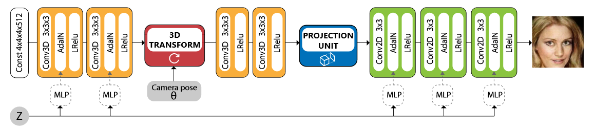

\(
\def\sc#1{\dosc#1\csod}
\def\dosc#1#2\csod{{\rm #1{\small #2}}}
\newcommand{\dee}{\mathrm{d}}
\newcommand{\Dee}{\mathrm{D}}
\newcommand{\In}{\mathrm{in}}
\newcommand{\Out}{\mathrm{out}}
\newcommand{\pdf}{\mathrm{pdf}}
\newcommand{\Cov}{\mathrm{Cov}}
\newcommand{\Var}{\mathrm{Var}}
\newcommand{\ve}[1]{\mathbf{#1}}
\newcommand{\mrm}[1]{\mathrm{#1}}
\newcommand{\etal}{{et~al.}}
\newcommand{\sphere}{\mathbb{S}^2}
\newcommand{\modeint}{\mathcal{M}}
\newcommand{\azimint}{\mathcal{N}}
\newcommand{\ra}{\rightarrow}
\newcommand{\mcal}[1]{\mathcal{#1}}
\newcommand{\X}{\mathcal{X}}
\newcommand{\Y}{\mathcal{Y}}
\newcommand{\Z}{\mathcal{Z}}
\newcommand{\x}{\mathbf{x}}
\newcommand{\y}{\mathbf{y}}
\newcommand{\z}{\mathbf{z}}
\newcommand{\tr}{\mathrm{tr}}
\newcommand{\sgn}{\mathrm{sgn}}
\newcommand{\diag}{\mathrm{diag}}
\newcommand{\Real}{\mathbb{R}}
\newcommand{\sseq}{\subseteq}
\newcommand{\ov}[1]{\overline{#1}}
\DeclareMathOperator*{\argmax}{arg\,max}
\DeclareMathOperator*{\argmin}{arg\,min}
\)
HoloGAN
This document is written as I slowly read HoloGAN: Unsupervised Learning of 3D Representations from Natural Images by Nguyen-Phuoc et al. [LINK] This paper is published at ICCV 2019.
Introduction
- HoloGAN is a generative adversarial network that takes two inputs:
- the latent code $\ve{z}$, and
- the camera pose $\theta$; i.e., a rotation parameter.
From the inputs, it generates an image of an object, rotated according to the camera pose.
- What is remarkable about HoloGAN is that it learns how to perform the above functionality while being trained on unlabelled images only.
- In other words, it learns how to disentangle poses from identities of objects seen in training images.
Generator Architecture
- The paper is basically about a novel architecture for the generator.
- The HoloGAN generator works in four different steps:
- Using the latent code $\ve{z}$, it transforms a template of 3D representation, in this case a learned 4D tensor, to a 3D representation of a specific object.
- In then uses the rotation parameter $\theta$ to rotate the 3D representation from Step 1, using the standard rotate-and-then-trilinear-sample method.
- Using a projection unit (details will be given later), it projects the rotated 3D representation to a 2D representation.
- Lastly, it uses the latent code $\ve{z}$ to transform the 2D representation from Step 3 into the output image.
- While training, the rotation parameter $\theta$ is sampled randomly. This forces the generator to learn a 3D representation that is independent of view transformation.
- The latent code $\ve{z}$ is used to transform feature representations through adaptive instance normalization (AdaIN) [Huang and Belongie 2017].
- The latent code $\ve{z}$ is mapped, with a multi-layer perceptron (MLP), to two parameters $\gamma(\ve{z})$ and $\sigma(\ve{z})$ that are used to control the AdaIN computation.
- Given some feature $\ve{\Phi}_l$ at layer $l$, AdaIN is defined as:
\begin{align*}
\mathrm{AdaIN}(\ve{\Phi}_l, \ve{z})
= \sigma(\ve{z}) \bigg( \frac{\ve{\Phi}_l - \mu(\ve{\Phi}_l)}{\sigma(\ve{\Phi}_l)} \bigg) + \gamma(\ve{z})
\end{align*}
where $\mu(\ve{\Phi}_l)$ and $\sigma(\ve{\Phi}_l)$ are the mean and the standard deviation of $\ve{\Phi}_l$, computed independent between channels and instances.
- HoloGAN starts with a 3D representation, but the final output is a 2D image. It goes from 3D to 2D through a projection unit, which maps a 4D tensor to a 3D tensor. The projection unit consists of 2 layers, applied in order.
- The reshaping layer transforms a 4D tensor of shape $C \times D \times H \times W$ to a 3D tensor of size $(C \cdot D) \times H \times W$. It does so by just concatenating the channel dimension with the depth dimension.
- A $1 \times 1$ convolution followed by a non-linear activation, which the paper uses the leakyReLU. This is used to learn occlusion.
- The overall architecture is depicted in the following picture:

Loss Functions
- Adversarial losses.
- The paper uses the non-saturating standard GAN loss from the original GAN paper. (However, it said it uses the loss functions from the DC-GAN paper, which ironically does not specify a loss function.)
-
Given the discriminator $D$, the GAN loss functions are:
\begin{align*}
\mathcal{L}_{\mathrm{GAN}, D} &:= -E_{\ve{x}} [\log D(\ve{x}) ] - E_{\ve{z},\theta} [\log (1 - G(\ve{z},\theta))] \\
\mathcal{L}_{\mathrm{GAN}, G} & := -E_{\ve{z},\theta} [\log D(G(\ve{z}, \theta))].
\end{align*}
Here $\ve{x}$ denotes a real image. The expectation $E_{\ve{x}}$ is evaluated with respected to the distribution where $\ve{x}$ is sampled from the distribution of real images.
- The identity regularizer.
- It makes sure that a latent vector constructed from the generated image matches that of the source latent vector $\ve{z}$.
- The paper introduces an encoder network $F$ that shares the majority of the convolution layers of the discriminatro, but uses an additional fully-connected layer to predict the reconstructed latent vector. The identity loss is given by:
\begin{align*}
\mathcal{L}_{\mathrm{identity}} = E_{\ve{z}} [\| \ve{z} - F(G(\ve{z})) \|^2]
\end{align*}
- The style discriminator.
- The style discriminator tries to classify the mean $\mu(\ve{\Psi}_l(\ve{x}))$ and standard deviation $\sigma(\ve{\Psi}_l(\ve{x}))$ whether they come from a real image or not. Here $\ve{\Psi}_l(\ve{x})$ is the feature representation after Layer $l$ of the discriminator $D$.
- For each layer $l$ of the discriminator $l$ that we decide to use, we define a network $D_l$ to compute a probability $D_l(\ve{x}) = D_l(\mu(\ve{\Psi}_l(\ve{x})), \sigma(\ve{\Psi}_l(\ve{x})))$ that the mean and the standard deviation comes from a real image.
- The style discriminator can then be used as another type of adversarial loss:
\begin{align*}
\mathcal{L}_{\mathrm{style},D}
&:=
- \sum_l E_{\ve{x}} [\log D_l(\ve{x})]
- \sum_l E_{\ve{z},\theta} [\log (1 - D_l(G(\ve{z},\theta)))] \\
\mathcal{L}_{\mathrm{style},G}
&:=
- \sum_l E_{\ve{z},\theta} [\log D_l(G(\ve{z},\theta))]\\\
\end{align*}
- The overall losses are given by:
\begin{align*}
\mathcal{L}_G := \mathcal{L}_{\mathrm{GAN},G} + \lambda_{\mathrm{identity}} \mathcal{L}_{\mathrm{identity}} + \lambda_{\mathrm{style}} \mathcal{L}_{\mathrm{style},G} \\
\mathcal{L}_D := \mathcal{L}_{\mathrm{GAN},D} + \lambda_{\mathrm{identity}} \mathcal{L}_{\mathrm{identity}} + \lambda_{\mathrm{style}} \mathcal{L}_{\mathrm{style},D}
\end{align*}
The paper said they use $\lambda_{\mathrm{style}} = \lambda_{\mathrm{style}} = 1$ for all experiments.
Last modified: 2020/05/23
{kind=link}